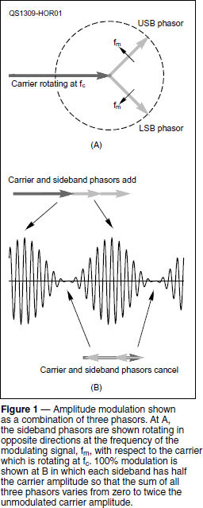
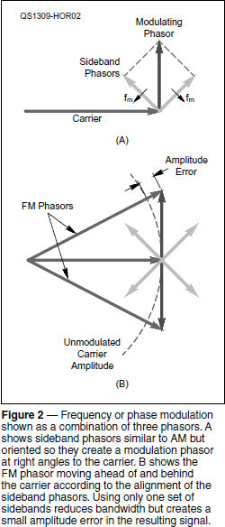
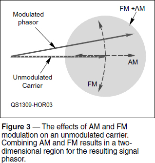
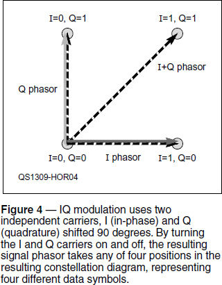

Experiment #128 — Phasors, Part 3
I confess to using the wrong value for √3 in last month’s column. It’s 1.732. The implications of that mistake are addressed on the “Hands-On Radio” web page.1 Now, on to modulation!
What if, as seems to happen on a regular basis, one tuner-upper attracts a competing tuner-upper with another unmodulated carrier identical in frequency and amplitude except for having a slightly different phase — say 45° — ahead of the original carrier? The new signal’s phasor is given as A∠45°, just ahead of the first signal by 45°. Even though both phasors are rotating around the origin, that relationship never changes.
Since both of the signal phasors have the same frequency, why not do away with the rotating and look only at the differences? What would happen if you take a seat on the first carrier’s phasor, looking out toward the arrow’s head from the origin, and spin around with it? From your new perspective, the phasor doesn’t move or change at all because you’re rotating with it at the same rate (frequency) and its length (amplitude) is constant. The second carrier with the 45° phase difference is pointed off to the left, halfway between straight ahead and to your left. It, too, doesn’t move or change, but the phase difference means it points in a different direction.
Let’s say that the competing tuner-upper starts to drift down a little bit in frequency. As the frequency of the second signal drops, the rate at which its phasor rotates gets a little slower, too. That means it will start to fall behind the original phasor and from your perspective, the second phasor appears to rotate clockwise or backwards according to our counterclockwise-equals-positive convention. The lower the second signal’s frequency, the faster it rotates backwards. Let’s say the second signal stabilizes at a frequency 1 Hz lower. To you, it appears to rotate backwards, passing backwards across your phasor once per second. Similarly, if the frequency of the second signal increases, it will appear to rotate counterclockwise.
Another possibility is that the phase of the second signal (with respect to the original signal) jumps around. In this case, what you would see is the phasor for the second signal shifting its position relative to the first signal — sometimes ahead, sometimes behind.
AM from the Phasor Point of View
AM produces three signals when a carrier is multiplied by a modulating signal. The first signal is the carrier with frequency, fc. If the modulating signal is a single tone with frequency, fm, two sidebands are created with frequencies, fc+fm (the upper sideband) and fc-fm (the lower sideband). See the Modulation chapter of the ARRL Handbook.2 Each of these signals can be treated as a phasor and the trio can be added together as we discussed in the previous column.
The amplitude of the three phasors doesn’t change but their relative directions do. Figure 1A shows what the three phasors look like from your perspective, sitting comfortably on the carrier phasor rotating at the carrier frequency, fc. Since the upper sideband (USB) phasor has a higher frequency than the carrier, you see it rotating counterclockwise at the modulating frequency, fm. Similarly, you see the LSB phasor rotating clockwise at fm. (Viewed all by themselves, the USB and LSB phasors are actually rotating at fc±fm.)

Note that these counter-rotating sideband phasors have the same amplitude and are always ahead of or behind the carrier phasor. Think about what this means for the sum of the three phasors. Using the tip-to-tail method of adding phasors, the resulting AM signal’s phasor will always be aligned with the carrier phasor because of the symmetry of the sideband phasors. However, the amplitude of the AM phasor will grow and shrink as the two sidebands add to, then oppose, the carrier phasor.
What happens if each sideband has exactly half the amplitude of the carrier? When the sideband phasors are both “pointing out” the resulting AM phasor’s amplitude equals the sum of the carrier plus the two sidebands: twice the original carrier’s amplitude. When the sideband phasors are “pointing in” their sum cancels with the carrier and there is no signal. Thus, the AM phasor’s amplitude varies from zero to twice that of the original carrier — just as you see in Figure 1B, which represents 100% modulation.
FM and PM from the Phasor Point of View
From the standpoint of the unmodulated carrier, the phasor of an FM or PM signal moves ahead and behind that of the carrier as the amplitude of the modulating signal changes. (For the rest of this column, FM will be used to mean both FM and PM.)
Just as for AM, a pair of counter-rotating sideband phasors with frequencies of fc±fm add and cancel just as for AM. Unlike AM, however, they are oriented so that they are creating a separate modulating phasor at right angles to the carrier phasor as in Figure 2A. The resulting FM phasor created by the sum of the carrier and the modulating phasor shifts ahead of and behind its unmodulated position as in Figure 2B.

It’s not that simple, however, because FM and PM signals have constant amplitudes — only the frequency (or phase) may shift with modulation. That means the final sum of the phasors must have a constant amplitude, that of the original unmodulated carrier, shown as the arc in Figure 2B. The figure shows the small amplitude error created by including just the one set of modulation sidebands. When the modulation level is low, the error is small enough that one pair of modulation sidebands is acceptable and this is called “narrowband FM.”
As the modulation level increases (“wideband” FM) and the resulting FM phasor moves farther and farther from the unmodulated carrier, the resulting amplitude error would become larger. To keep the FM phasor close enough to the required amplitude, additional sets of sideband phasors are required. Each successive set operates at right angles to the previous set. This is the complex set of sidebands.
IQ Modulation with Phasors
As Figure 3 shows, the phasor of a modulated carrier moves around in an area defined by whether the modulation is AM or FM. If AM, the movement is horizontal, changing the phasor’s amplitude. If FM, the movement is along an arc, changing the relative phase. There’s no reason a signal can’t have both AM and FM components with the resulting phasor located anywhere within the indicated area.

Oversimplifying to a degree, this is what IQ modulation is in which two different modulated signals are combined: the I signal (for in phase) and the Q signal (for quadrature). Both the I and Q signals are regular carrier signals, but the Q signal is 90° ahead of the I signal as shown in Figure 4. Modulating the I and Q signals independently and combining them can cause the resulting phasor to move around in the pattern of any of the AM or FM phasors discussed previously.

Digital data can be transmitted by turning the I and Q signals on (1) and off (0) independently (also called amplitude shift keying), creating four possible combinations (00, 01, 10, and 11). By adding the on-or-off I and Q phasors together, the result is four different phasors shown in Figure 4. This is called quadrature amplitude modulation or QAM and each position of the phasor is called a symbol. If there are four possible symbols, it is called 4-QAM. A receiver demodulates the I and Q signals separately and decodes the phasors into the same on/off combinations, reproducing the same stream of digital data.
From your perspective, sitting on the I signal’s phasor, the end points of the four phasors form a square called the modulation’s constellation diagram. Complex schemes with hundreds of points in the constellation have been devised — for example, digital cable TV signals use 64 or 256 points, called 64-QAM or 256-QAM, respectively.
All this from simple rotation! The interested reader may want to tackle additional information found online. You can learn more about IQ Modulation at www.home.agilent.com/upload/cmc_upload/All/IQ_Modulation.htm?cmpid=zzfindnw_iqmod, Amplitude and Frequency/Phase Modulation at www.zhinst.com/blogs/michele/files/downloads/2012/12/AMFM.pdf and Digital Modulation at http://ee.eng.usm.my/eeacad/mandeep/EEE436/CHAPTER2.pdf.
Nevertheless, even if you stop here, you’ll have traveled from a basic definition of phasors to how they can be used to visualize the modulation processes we use every day.
Notes
1All previous Hands-On Radio experiments are available to ARRL members at www.arrl.org/hands-on-radio.
2Available from your ARRL dealer, or from the ARRL Store, ARRL order no. 6948. Telephone toll-free in the US 888-277-5289, or 860-594-0355, fax 860-594-0303; www.arrl.org/shop/; pubsales@arrl.org.